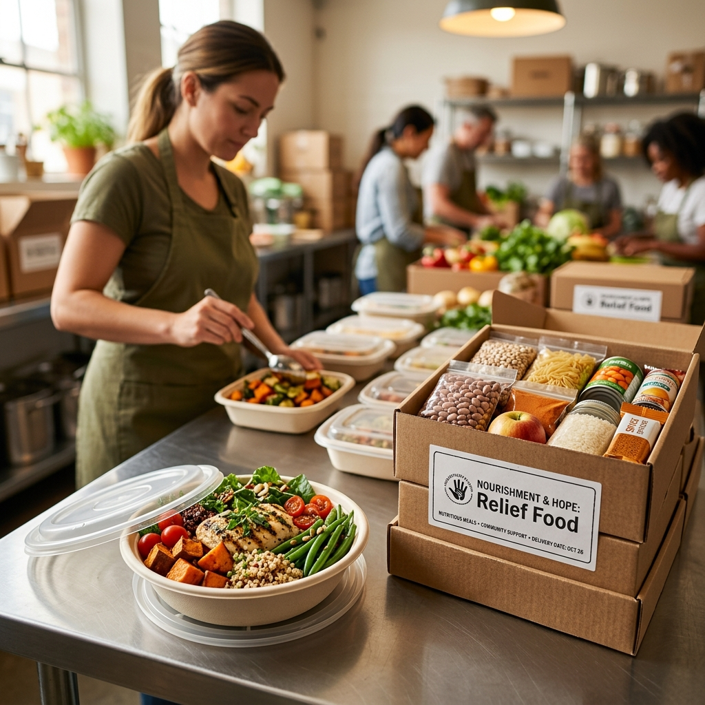
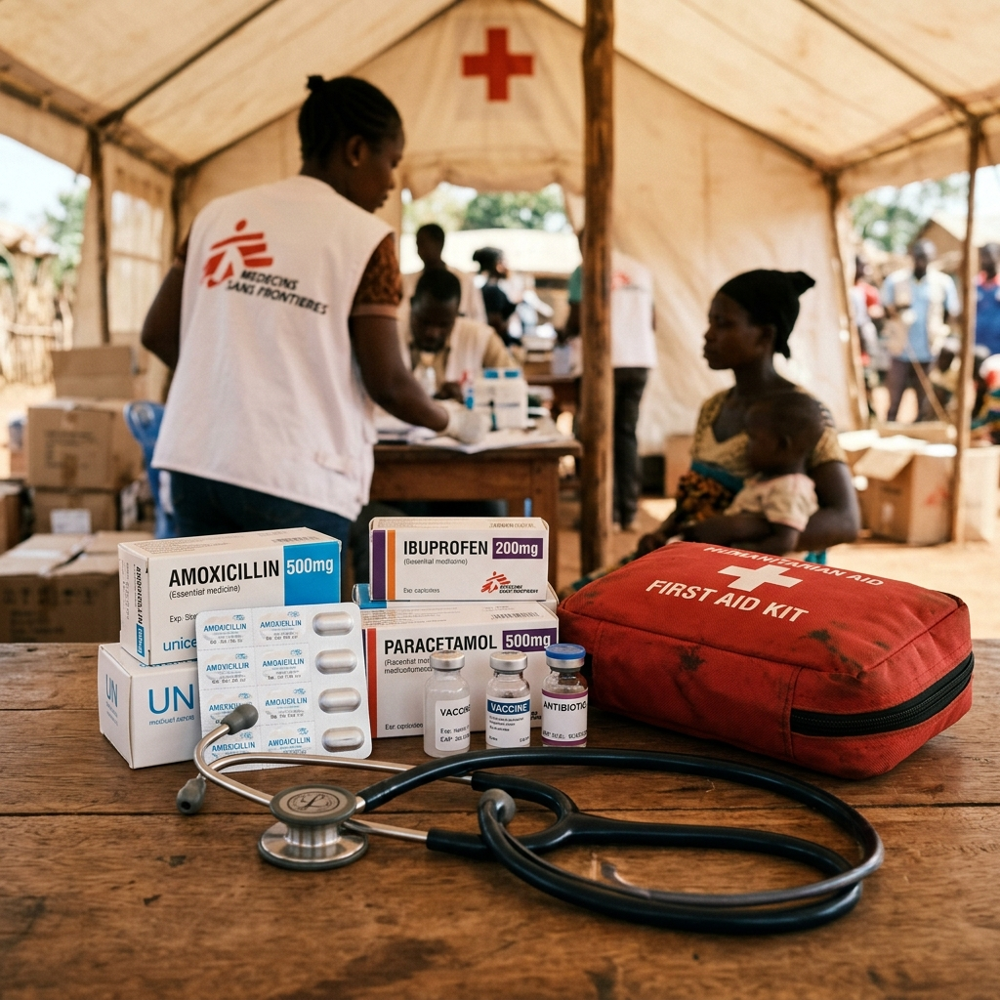
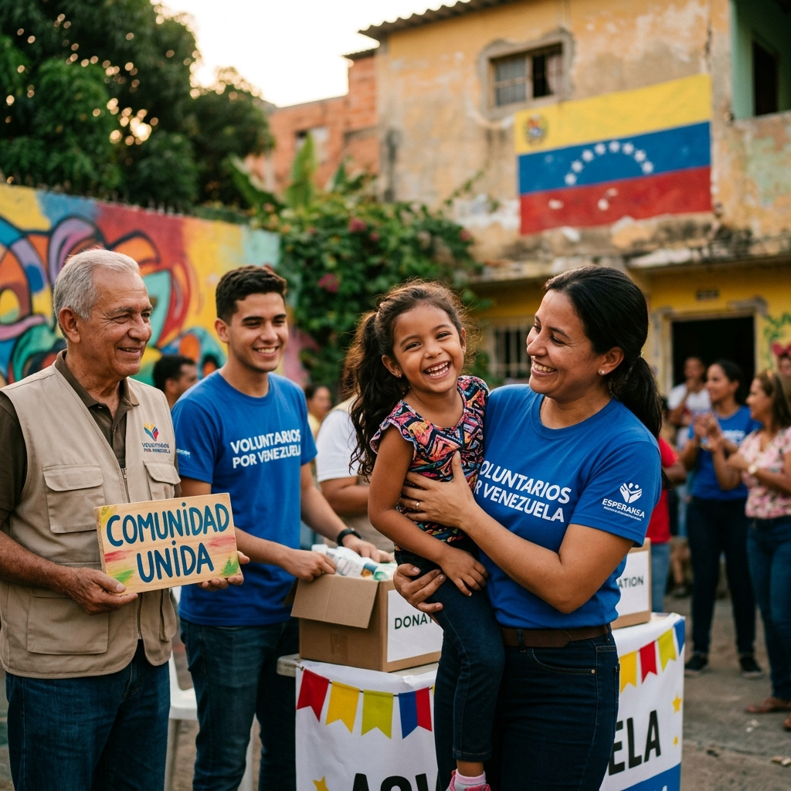

Apoya a familias afectadas por los terremotos y recibe unicoins. Sé parte de una nueva forma de donar.
Un dólar donado. Un unicoin recibido.
Dona hoy para apoyar la ayuda humanitaria de emergencia. Como muestra de agradecimiento por tu solidaridad, recibirás 1 Unicoin por cada USD 1 donado.
Unicoin Foundation ha destinado hasta 250,000 unicoins para recompensar a los donantes que participen en esta iniciativa.
Los fondos van a ser recibidos directamente por We Love Foundation.

Unicoin Foundation ha destinado un fondo de 250,000 unicoins para reconocer a quienes apoyen esta iniciativa. Por cada dólar donado, recibirás el equivalente en unicoins, hasta agotar el fondo de recompensas.
Los donantes reciben unicoins equivalentes al monto de su donación, hasta agotar el fondo de 250,000 unicoins aportado por la Unicoin Foundation.
Venezuela fue sacudida por dos poderosos terremotos, de magnitud 7.5 Mw y 7.2 Mw, creando una emergencia humanitaria de gran escala en comunidades del norte del país.
El impacto ha causado el colapso de edificios, daños severos a viviendas, escuelas, centros de salud e infraestructura básica. Miles de familias han resultado heridas, desplazadas o sin acceso a un refugio seguro.
Aunque los terremotos ya pasaron, la crisis continúa para las familias que ahora enfrentan el largo camino hacia la recuperación. Reconstruir hogares, restablecer servicios básicos y ayudar a las comunidades a recuperar estabilidad requerirá apoyo inmediato y continuo.

Comidas nutritivas y cajas de alimentos esenciales para familias en situación de emergencia.

Medicamentos esenciales, kits de primeros auxilios e insumos médicos de emergencia.

Espacios de refugio seguros y temporales, colchonetas, mantas y kits de higiene básica.

Apoyo emocional, reconstrucción de espacios comunitarios y resiliencia para el futuro.

Necesitamos tu voz para amplificar este mensaje de ayuda. Únete a la red de creadores que ya están movilizando a sus comunidades.
Líneas de contacto y herramientas útiles para situaciones críticas y búsqueda de personas.
Necesitamos asegurar y distribuir los siguientes suministros de emergencia prioritarios para las familias afectadas en las zonas de desastre:
Respuestas a las dudas más comunes sobre el funcionamiento de la campaña y el matching.
Una vez que la fundación receptora valide tu donación, el equipo de Unicoin se pondrá en contacto contigo para indicarte los pasos necesarios para recibir tu certificado de unicoins.
La entrega de la recompensa está sujeta a la disponibilidad del fondo de 250,000 unicoins aportado por la Unicoin Foundation.
El 100% de las donaciones financieras va directamente a organizaciones humanitarias en el terreno, como la Cruz Roja Venezolana y agrupaciones de socorro aliadas, dedicadas a la entrega de alimentos, agua potable, medicinas y refugios en las áreas más afectadas por el terremoto.
Unicoin Foundation apoya esta iniciativa mediante un programa de recompensas, aportando un fondo de hasta 250,000 unicoins para reconocer a quienes realicen una donación a esta causa. Los donantes recibirán en unicoins el equivalente al monto de su donación, sujeto a la disponibilidad del fondo.
Influur lidera la amplificación de la campaña, movilizando a creadores de contenido, influencers y comunidades digitales para dar visibilidad a la iniciativa e impulsar la participación de personas alrededor del mundo.
To-Be coordina la recepción, organización y distribución de los insumos donados, asegurando que la ayuda llegue de manera eficiente y organizada a quienes más lo necesitan.
Puedes ayudar compartiendo esta página en tus redes sociales utilizando el hashtag #RiseVenezuela. Si eres un creador de contenido o tienes canales con alcance, puedes registrarte como amplificador para recibir un kit de medios e integrarte oficialmente al esfuerzo de difusión coordinado por Influur.